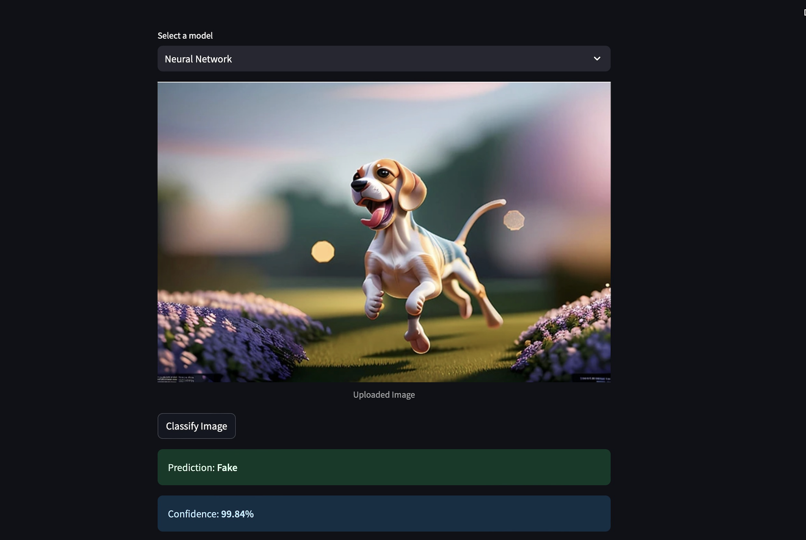
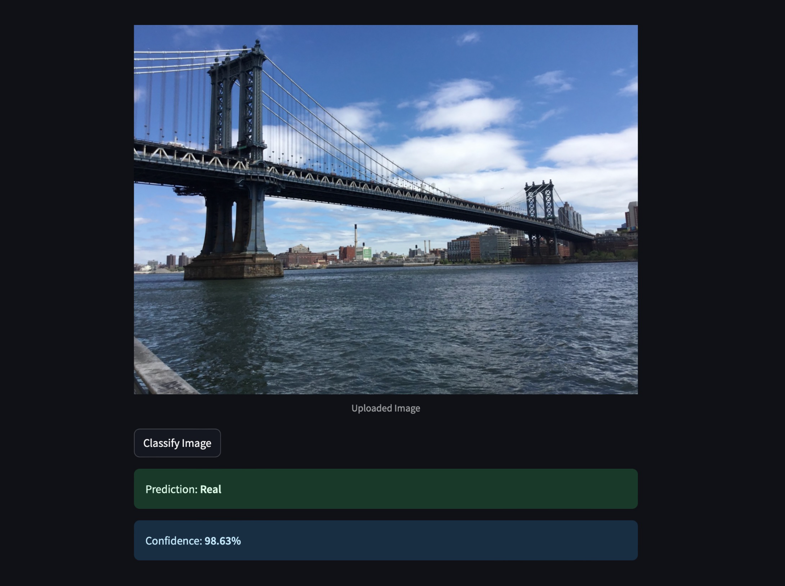

Welcome to Detecting Real vs AI Generated Images’ documentation!
Purpose:
Creating a model to distinguish between AI-generated images and real images is crucial in addressing the growing concerns of authenticity, misinformation, and security in the digital age. As generative AI technology advances, it becomes increasingly challenging to differentiate synthetic content from genuine ones, posing risks in fields like journalism, social media, and forensics. Our approach combines the strengths of high-level semantic features from CLIP embeddings and low-level frequency information from Fourier Transform (FFT) embeddings, capturing both contextual and structural nuances. By feeding these comprehensive embeddings into SVM, Neural Networks, and XGBoost models, we developed a robust classification pipeline capable of accurately identifying real versus AI-generated images. This solution not only enhances detection capabilities but also contributes to fostering transparency and trust in AI-driven content.
Sample Streamlit Output
Identifying an AI generated image using our trained Neural Network.
{kind=link}
Identifying a real image using our trained XGBoost model.
{kind=link}
Contents: